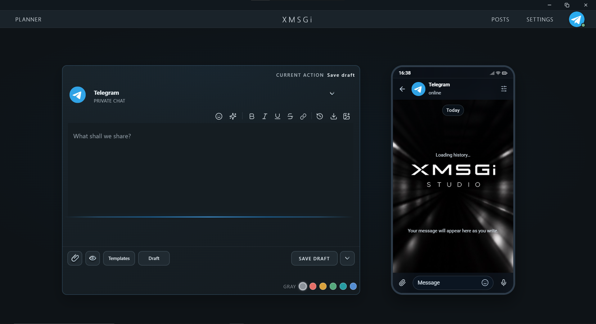
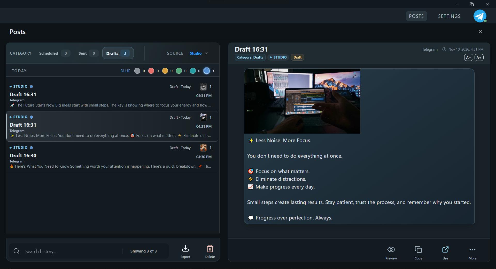

Рабочее пространство для Telegram
Публикуйте в Telegram спокойно и вовремя.
XMSGi Studio — настольное приложение для создания, планирования и управления постами через ваш личный аккаунт Telegram. Редактор, черновики и история публикаций — в одном месте, без ботов.

